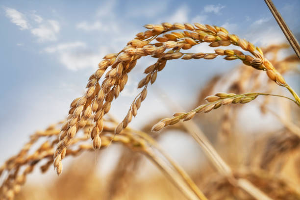

AgriSmart
AgriSmart
KARAKTERISTIK DAN JENIS BIBIT PADI YANG UNGGUL
Bibit padi unggul adalah jenis-jenis bibit padi yang telah melalui seleksi dan pengembangan genetik
untuk menghasilkan sifat-sifat unggul. Bibit-bibit ini memiliki karakteristik tertentu yang membuatnya
lebih produktif, tahan terhadap hama dan penyakit, serta mampu bertahan dalam berbagai kondisi
lingkungan.
Berikut adalah beberapa karakteristik bibit padi unggul:
- Produktivitas Tinggi: Bibit padi unggul memiliki potensi hasil panen yang lebih tinggi dibandingkan dengan varietas padi biasa. Mereka telah dirancang untuk menghasilkan jumlah gabah yang optimal per hektar.
- Ketahanan Terhadap Hama dan Penyakit: Varietas unggul umumnya memiliki ketahanan terhadap serangan hama seperti kutu, wereng, dan penyakit seperti blast atau hawar daun, yang dapat merusak hasil panen.
- Ketahanan Terhadap Kekeringan atau Banjir: Beberapa bibit padi unggul telah dikembangkan untuk memiliki ketahanan terhadap kondisi kekeringan atau banjir. Mereka memiliki akar yang kuat atau sifat tahan air yang membuatnya dapat bertahan dalam kondisi lingkungan yang sulit.
- Waktu Tanam yang Fleksibel: Bibit padi unggul sering kali memiliki masa tanam yang lebih pendek, memungkinkan petani untuk memanen lebih awal dan mempercepat siklus tanam-panen.
- Kualitas Butir yang Baik: Selain kuantitas, bibit padi unggul juga dapat memiliki kualitas butir yang baik, seperti ukuran butir yang seragam, warna gabah yang bersih, dan keberlimpahan pati yang menghasilkan beras berkualitas tinggi.
- Adaptasi Lingkungan yang Baik: Bibit padi unggul dapat tumbuh dengan baik di berbagai jenis tanah dan kondisi iklim. Mereka dapat diadaptasi dengan baik di berbagai wilayah geografis.
- IR Varietas (International Rice Varieties)
- Varietas Hibrida
- Varietas Padi Organik
- Varietas Padi Tahan Kekeringan
- Varietas Padi Tahan Banjir
- Varietas Padi Aromatik
- Varietas Padi Pulen (Waxy Rice Varieties)
- Varietas Padi Lokal
Penting untuk mencatat bahwa penggunaan bibit padi unggul ini membantu meningkatkan
produktivitas pertanian padi dan kontribusi terhadap ketahanan pangan global. Program penelitian
dan pengembangan terus berlangsung untuk menciptakan varietas-varietas padi unggul yang lebih
baik yang dapat memenuhi tuntutan pertanian modern dan menghadapi tantangan perubahan iklim.
Selain itu, terdapat banyak jenis bibit padi yang unggul yang telah dikembangkan oleh para peneliti
pertanian. Beberapa jenis bibit padi unggul yang dikenal termasuk :
Varietas padi ini dikembangkan oleh International Rice Research Institute (IRRI) dan memiliki ketahanan terhadap berbagai jenis hama, penyakit, dan kondisi cuaca ekstrem.
Bibit padi hibrida dihasilkan dari persilangan dua varietas padi yang berbeda untuk menghasilkan keturunan dengan sifat-sifat unggul seperti hasil panen yang tinggi, ketahanan terhadap penyakit, dan ketahanan terhadap kekeringan.
Varietas padi organik dikembangkan tanpa menggunakan pupuk atau pestisida kimia. Mereka biasanya ditanam dengan menggunakan pupuk organik dan teknik pengendalian hama alami.
Varietas ini memiliki kemampuan untuk tumbuh dengan baik dalam kondisi kekeringan. Mereka biasanya memiliki sistem perakaran yang dalam dan efisien dalam penggunaan air.
Varietas padi ini dirancang untuk tumbuh dengan baik dalam kondisi banjir. Mereka memiliki kemampuan untuk bertahan hidup dalam air yang cukup lama.
Varietas ini dikenal karena memiliki aroma yang khas. Contohnya adalah "Basmati" yang berasal dari India dan Pakistan.
Varietas ini memiliki sifat butiran yang lengket dan sering digunakan untuk produk-produk makanan tradisional seperti kue dan kue klepon.
Varietas padi lokal yang telah diadaptasi dan ditanam oleh masyarakat lokal di berbagai wilayah. Varietas ini biasanya telah beradaptasi dengan baik dengan lingkungan setempat.
Setiap jenis bibit padi unggul memiliki karakteristik dan keunggulan tersendiri, dan pemilihan jenis bibit harus disesuaikan dengan kondisi lingkungan, iklim, dan kebutuhan petani setempat. Program penelitian pertanian terus mengembangkan varietas baru dengan sifat-sifat yang lebih unggul untuk meningkatkan hasil panen dan keberlanjutan pertanian padi.